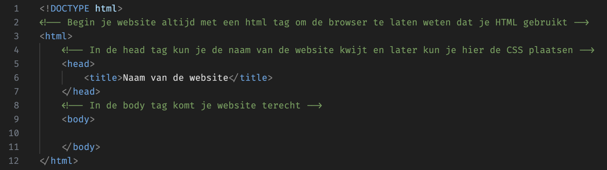
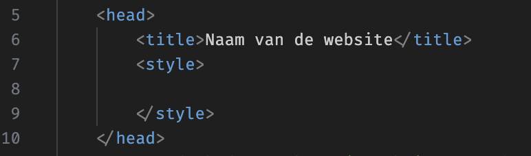
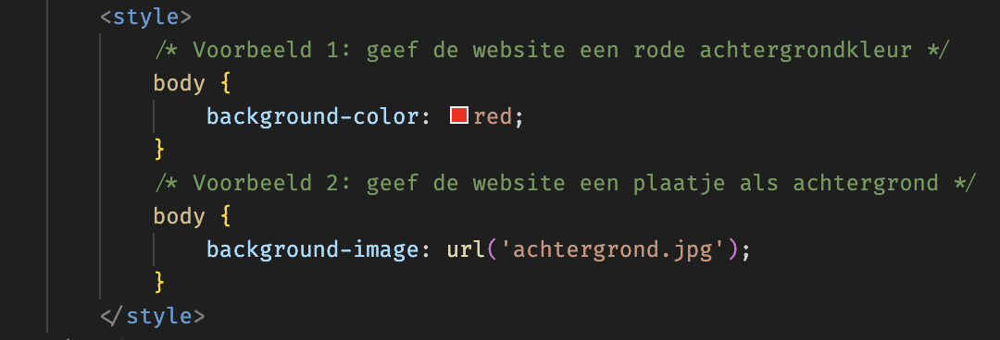
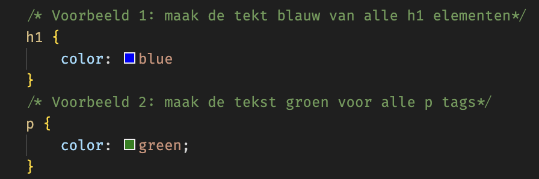
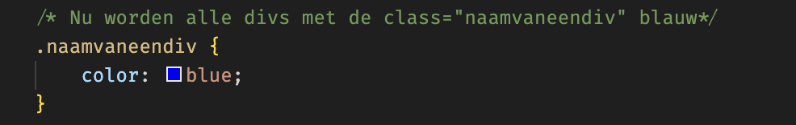
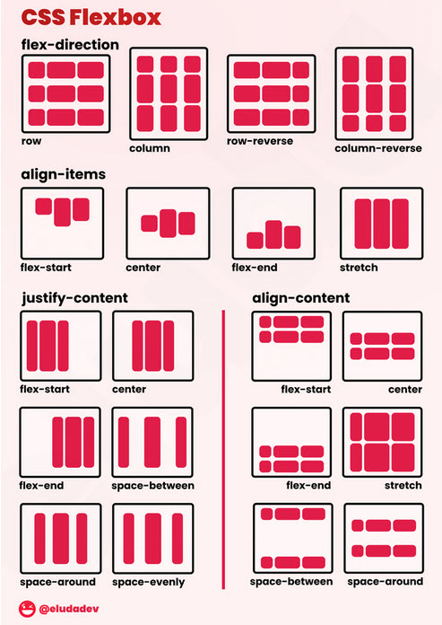

Programmeren met Pals
Bouw je eigen website
Op deze website leer je programmeren met Pals. Aan het eind van deze lessenserie kun je zelf een gave website bouwen.
- Les 1: Hoe zet je een HTML-pagina op?
- Les 2: Hoe kan ik een tabel maken en de website wat kleur geven?
- Les 3: Plaatjes, linkjes en divs
- Les 4: Flexbox
- Les 5: Positionering en Layout
- Les 6: Geavanceerde CSS en animaties
- Ontwerp principes
Les 1: Hoe zet je een HTML-pagina op?
Programmeertalen
Je kunt een website maken met de volgende programmeertalen:
- HTML = Hyper Text Markup Language -> hiermee kun je structuur aan je website geven
- CSS = Cascading Style Sheets -> hiermee kun je de website stylen. Bijvoorbeeld mooie kleuren geven
- JavaScript = hiermee kun je de website dynamisch maken. Als je een game wilt maken bijvoorbeeld, dan kun je daarvoor JavaScript gebruiken
Een HTML-bestand
We beginnen met HTML. Dat is de basis. Hieronder zie je een voorbeeld van een HTML-pagina: 
Maak je eigen HTML-bestand
Je kunt heel eenvoudig een eigen HTML-bestand maken. Dit kun je doen door Notepad++ te openen. Hierin kun je HTML typen en deze vervolgens opslaan.
Opdracht 1: Maak een HTML-bestand in Notepad++ en sla deze op als een .html-bestand. Zorg dat je deze wel opslaat op een logische plaats op je computer. Documenten is een goede plek.
Zorg vervolgens dat je een standaard HTML-pagina maakt zoals in het voorbeeld hierboven. Sla dit vervolgens op.
Tekst toevoegen op je website
Nu wil je natuurlijk teksten toevoegen op je website. HTML werkt alleen met code. Dus als je een enter doet, dan zie je dat niet terug op de website. Hieronder zie je een lijst met tags die je kunt gebruiken:
1. Koptekst:
<h1>Dit is een grote koptekst</h1>
<h2>Dit is een kleinere koptekst</h2>
<h3>Dit is een nog kleinere koptekst</h3>
2. Paragraaf:
<p>Hier plaats je grote stukken tekst</p>
3. Bold, Schuin of Lijntje eronder:
<b>Deze tekst wordt dikgedrukt</b>
<i>Deze tekst wordt schuin</i>
<u>Hier komt een lijntje onder</u>
Opdracht 2: Geef je website een mooie titel. Gebruik daarvoor een h1-tag. Maak vervolgens een paragraaf waarin je wat vertelt over waarom je HTML gebruikt. Maak belangrijke woorden bold. Nog belangrijkere woorden kun je ook een underline geven. Als je een eigen website bouwt, zorg er dan in ieder geval voor dat je alle bovengenoemde tags gebruikt.
Lijstje maken
Soms is het fijn om een lijstje te maken met daarin een opsomming. Redenen kunnen zijn:
- Reden 1: het is overzichtelijk
- Reden 2: er komen mooie bolletjes voor
- Reden 3: je kunt eventueel ook het systeem automatisch laten tellen
<ul>
<li>Punt 1</li>
<li>Punt 2</li>
<li>Punt 3</li>
</ul>
Opdracht 3: Maak een opsomming met 5 redenen waarvoor programmeren wordt gebruikt. Als je een eigen website bouwt, mag je een opsomming naar keuze gebruiken. Zorg er in ieder geval voor dat je een ul en li gebruikt. Bonus: kun je uitzoeken op welke wijze je een opsomming met getallen kunt maken?
Les 2: Hoe kan ik een tabel maken en de website wat kleur geven?
Hoe kun je een tabel maken?
Een tabel zul je erg vaak gebruiken. Bijvoorbeeld om wat data te tonen en zorgen dat dit er overzichtelijk uitziet. Hieronder wat redenen waarom je een tabel zou kunnen gebruiken.
| Reden | Beschrijving |
|---|---|
| Reden 1 | Het is overzichtelijk |
| Reden 2 | Je kunt data netjes organiseren |
| Reden 3 | Het is gemakkelijk om data te vergelijken |
| Reden 4 | Je kunt rijen en kolommen gebruiken om structuur aan te brengen |
- table-tag: om aan te geven dat het een tabel is
- thead-tag: hier kun je de koppen plaatsen
- tbody-tag: hier komt de data
- tr-tag: voor iedere rij gebruik je een tr-tag
- th-tag: deze gebruik je voor de koppen
- td-tag: deze gebruik je voor iedere cel
<table>
<thead>
<tr>
<th>Reden</th>
<th>Beschrijving</th>
</tr>
</thead>
<tbody>
<tr>
<td>Reden 1</td>
<td>Het is overzichtelijk</td>
</tr>
<tr>
<td>Reden 2</td>
<td>Je kunt data netjes organiseren</td>
</tr>
<tr>
<td>Reden 3</td>
<td>Het is gemakkelijk om data te vergelijken</td>
</tr>
<tr>
<td>Reden 4</td>
<td>Je kunt rijen en kolommen gebruiken om structuur aan te brengen</td>
</tr>
</tbody>
</table>
Kleuren met CSS
De website is nu best wel saai. Je hebt een witte achtergrond met zwarte letters. Om de website wat mooier te maken
heb je CSS nodig.

Hiervoor heb je een style-tag nodig. Deze kun je plaatsen tussen je head-tag zoals in bovenstaand voorbeeld.
Een mooie achtergrond
Nu willen we een mooie achtergrond maken. Het eerste wat je moet doen is duidelijk aangeven in de style-tag welk element je wilt stylen. In dit geval kiezen we de body-tag omdat de gehele website daarin staat. Vervolgens zet je tussen { } de styling die je wilt doorvoeren. Als we de achtergrond willen veranderen, kunnen we daarvoor background-color gebruiken of voor een plaatje background-image. Sluit iedere regel af met een ;. Hieronder twee voorbeelden:
Geef je tekst een mooie kleur
Het is ook goed mogelijk om teksten een kleur te geven. Ook hiervoor kun je CSS gebruiken. Dit kun je doen door de tag te benoemen die je een kleur wilt geven en vervolgens een regel met color: toe te voegen. Hieronder een voorbeeld waarbij de h1-tag blauw wordt gemaakt en de h2-tag groen.
Les 3: Plaatjes, linkjes en divs
Plaatjes toevoegen
Laten we de website wat mooier maken door een plaatje toe te voegen. Dit kan heel eenvoudig door de img-tag te gebruiken. Zorg dat je het plaatje op dezelfde plek hebt staan als je .html-bestand. In de src="" zet je de naam van het plaatje + extensie (.jpg bijvoorbeeld)
<img src="plaatje.jpg">
Link toevoegen
Het is ook mogelijk om een link naar een andere website te maken. Dit kan heel eenvoudig door het gebruik van een a-tag. Hieronder een voorbeeld van een link + de code. In de href="" plaats je de link. En tussen de a-tag plaats je de tekst die je wilt geven aan de link.
Klik hier
<a href="https://lodenstein.enverio.nl">Klik hier</a>
Een div
Tot nu toe heb je alles onder elkaar gezet. Ik kan mij voorstellen dat het ook handig is om dingen naast elkaar te zetten. Daarvoor heb je weer CSS nodig. De techniek die je daarvoor kunt gebruiken is flexbox. Het eerste wat je nodig hebt is het gebruik van een div. Een div is een tag die in principe niets doet tot je er CSS aan toevoegt. Alleen moet je er dan wel voor zorgen dat CSS weet welke div aangepast dient te worden. Dit kan door de div een naam te geven. Dit noemen we een id. Hieronder een voorbeeld van een div met een id.
<div id="naamvandediv">Wat tekst in de div</div>
Nu zouden we de tekst in de div een aparte kleur kunnen geven. Omdat de div een id heeft, kunnen we in CSS heel makkelijk deze div apart aanpassen. Dit kun je doen door een # te gebruiken en dan de naam van de div.
Meerdere divs tegelijk stylen
Het kan ook zijn dat je meerdere divs tegelijk wilt stylen. Bijvoorbeeld een kleur geven. In het vorige voorbeeld zag je dat we een id gebruikten. Nadeel van een id is dat je deze maar 1 keer kunt gebruiken. Iedere div met een id moet een unieke naam hebben. Hiervoor hebben ze wat anders uitgevonden: een class. Door het class-attribuut te gebruiken in plaats van een id kun je meerdere divs dezelfde naam geven en stylen met CSS.

<div class="naamvaneendiv">Div1</div>
<div class="naamvaneendiv">Div2</div>
<div class="naamvaneendiv">Div3</div>
Les 4: flexbox
Meerdere divs maken
Tot nu toe hebben we alles onder elkaar gezet. Het is ook goed mogelijk om zaken naast elkaar te zetten. Hiervoor heb je flexbox nodig. Hiervoor heb je wel meerdere divs nodig. Zorg dat je deze eerst maakt.
<div class="hoofddiv">
<div>Links</div>
<div>Midden</div>
<div>Rechts</div>
</div>
Nu zul je zien dat de divs onder elkaar staan. Dit kunnen we oplossen met flexbox. Je kunt dit doen door de hoofddiv class in css display: flex; te geven.
display :flex;
Je ziet dat de divs mooi naast elkaar staan. Maar we zien dat deze div nu niet schermvullen is. Dit kun je makkelijk aanpassen via CSS. Daarvoor kun je de width CSS parameter gebruiken. Hieronder een voorbeeld.
width: 100%;
background-color: green;
Voorbeeld div:
Divs verdelen vis Flexbox
Je hebt nu al een div gemaakt in opdracht 12 met daarin drie divjes die via flexbox naast elkaar staan. Alleen willen we deze div nu schermvullend maken en de divjes erin gelijkmatig verdelen. Ook hiervoor heeft flexbox een oplossing.
justify-content: space-between;
De justify-content bepaald hoe de divs worden verdeeld. Je kunt deze koppelen aan je hoofddiv. Je kunt ook andere opties gebruiken om de divs te verdelen. Bijvoorbeeld 'flex-end'. Dan komen alle divs aan het eind. Of bijvoorbeeld 'flex-start'. Daarmee komen de divs aan het begin.
Leuke trucjes met flexbox
Super simpel dus eigenlijk. Maar met flexbox kun je nog veel meer.
Hieronder zie je een mooi plaatje met daarin de mogelijkheden van flexbox. Deze kun je er nog eens bijpakken als je flexbox wilt gebruiken. 
Les 5: Positionering en Layout
Wat is positionering in CSS?
Positionering is een van de belangrijkste aspecten van webdesign. Het bepaalt hoe elementen zoals tekst, afbeeldingen en knoppen op een webpagina worden geplaatst. Door positionering te begrijpen en goed toe te passen, kun je ervoor zorgen dat je website er georganiseerd uitziet en prettig is voor gebruikers.
Verschillende soorten positionering in CSS
CSS biedt verschillende methoden om elementen op een pagina te positioneren. Dit zijn de meest gebruikte positioneringsopties:
1. Static
Dit is de standaardwaarde van positionering. Een element met position: static; wordt gewoon weergegeven op de plek waar het normaal in de documentstroom zou staan. Dit betekent dat het element geen speciale positioneringsregels volgt.
div {
position: static;
}
2. Relative
Een element met position: relative; wordt relatief gepositioneerd ten opzichte van zijn normale positie. Je kunt het verschuiven met behulp van de eigenschappen top, right, bottom, en left. Het behoudt echter zijn oorspronkelijke ruimte op de pagina.
div {
position: relative;
top: 20px; /* Het element wordt 20px naar beneden verplaatst */
left: 10px; /* Het element wordt 10px naar rechts verplaatst */
}
3. Absolute
Een element met position: absolute; wordt gepositioneerd ten opzichte van het dichtstbijzijnde ouderelement dat niet position: static; heeft. Als er geen ouderelement is met een andere positionering, wordt het element ten opzichte van het document (de hele pagina) gepositioneerd.
div {
position: absolute;
top: 50px;
right: 30px;
}
In dit voorbeeld wordt het element 50 pixels vanaf de bovenkant van het ouderelement gepositioneerd en 30 pixels vanaf de rechterkant.
4. Fixed
Een element met position: fixed; wordt relatief gepositioneerd ten opzichte van het browservenster. Zelfs als de gebruiker naar beneden of omhoog scrollt, blijft het element op dezelfde plaats staan.
div {
position: fixed;
bottom: 0;
right: 0;
width: 100px;
height: 100px;
background-color: yellow;
}
In dit voorbeeld blijft het element altijd in de rechterbenedenhoek van het venster.
Padding en Margin
CSS biedt twee belangrijke eigenschappen om ruimte binnen en buiten een element te creëren: padding en margin.
1. Padding
Padding is de ruimte binnen een element, tussen de inhoud (zoals tekst of afbeeldingen) en de rand van het element. Padding zorgt ervoor dat de inhoud niet strak tegen de randen aan zit.
Voorbeeld van padding in CSS:
div {
padding: 20px; /* Zorgt voor ruimte binnen het element */
background-color: lightblue;
}
2. Margin
Margin is de ruimte buiten een element, tussen de rand van het element en omliggende elementen. Met margin kun je afstand creëren tussen verschillende elementen op de pagina.
Voorbeeld van margin in CSS:
div {
margin: 10px; /* Zorgt voor ruimte buiten het element */
background-color: lightgreen;
}
Een element centreren met `margin: 0 auto;`
Als je een element op je website horizontaal wilt centreren, zoals een blok of een container, kun je gebruik maken van de CSS-marge-eigenschap. Specifiek kun je de volgende regel gebruiken:
div {
width: 50%; /* Zorg ervoor dat het element een breedte heeft */
margin: 0 auto; /* De marge boven/onder is 0 en links/rechts automatisch */
}
Hier zorgt `margin: 0 auto;` ervoor dat het element automatisch wordt uitgelijnd in het midden van de pagina, zolang het een breedte heeft die kleiner is dan de volledige breedte van de pagina.
Uitleg van de code:
- width: 50%; Dit stelt de breedte van het element in op de helft van de breedte van de pagina.
- margin: 0 auto; De eerste waarde (0) geeft geen ruimte boven en onder het element. De tweede waarde (auto) zorgt ervoor dat er automatisch gelijke marges aan de linker- en rechterkant van het element worden toegevoegd, wat het element in het midden van de pagina plaatst.
Opdrachten
Opdracht 14:
Maak een div en geef deze een padding van 20 pixels. Kijk hoe de inhoud van de div verder van de rand komt te staan.
Opdracht 15:
Maak twee div-elementen onder elkaar en geef de bovenste div een margin van 30 pixels aan de bovenkant. Bekijk hoe de ruimte tussen de twee div-elementen groter wordt.
Opdracht 16:
Maak twee div-elementen op je website:
- Geef het eerste
div-element de eigenschapposition: relative;en verplaats het 50 pixels naar rechts en 30 pixels naar beneden. - Maak vervolgens een tweede
divbinnen het eerstediv-element en geef het de eigenschapposition: absolute;mettop: 0;enleft: 0;.
Vraag: Waar wordt het tweede div-element geplaatst, en waarom?
Opdracht 17:
Maak een div op je website en stel de breedte in op 50%. Gebruik vervolgens margin: 0 auto; om deze div in het midden van de pagina te centreren. Voeg een achtergrondkleur toe zodat je goed kunt zien dat het element in het midden staat.
Les 6: CSS Animaties en Kleuren
Wat zijn CSS-animaties?
CSS-animaties zorgen ervoor dat je elementen op je website dynamisch kunt laten bewegen of geleidelijk kunt veranderen van stijl. Dit kan bijvoorbeeld een knop zijn die van kleur verandert wanneer je eroverheen beweegt, of een afbeelding die langzaam inzoomt. Animaties geven je website een meer interactieve en levendige uitstraling.
Met CSS kun je zowel eenvoudige animaties als complexe overgangen maken. CSS-transities zijn een manier om veranderingen van stijl vloeiend te laten verlopen, terwijl volledige animaties meer controle geven over de beweging van elementen.
CSS Transities
Transities zijn een eenvoudige manier om een vloeiend effect toe te voegen wanneer een element van stijl verandert. Bijvoorbeeld, als een knop normaal blauw is en je wilt dat deze groen wordt wanneer je er met de muis overheen beweegt, kun je een transitie toevoegen zodat de verandering soepel verloopt in plaats van abrupt.
.button {
background-color: blue;
color: white;
padding: 10px;
border: none;
transition: background-color 0.3s ease; /* Transitie toevoegen */
}
.button:hover {
background-color: green; /* Verandert naar groen bij hover */
}
In dit voorbeeld verandert de knop van blauw naar groen wanneer de gebruiker er met de muis overheen beweegt, en de verandering duurt 0.3 seconden.
Kleuren gebruiken in CSS
Kleuren spelen een grote rol in het ontwerp van een website. Ze zorgen voor visuele aantrekkingskracht en kunnen de sfeer van een website bepalen. CSS biedt verschillende manieren om kleuren toe te voegen en aan te passen:
- Kleurcodes: Je kunt kleuren instellen met hexadecimale codes (zoals
#ff0000voor rood), RGB-waarden (zoalsrgb(255, 0, 0)), of kleurnaam (zoalsred). - Overgangen: Je kunt ook kleurovergangen (gradients) gebruiken, waarbij twee of meer kleuren geleidelijk in elkaar overlopen. Bijvoorbeeld:
background: linear-gradient(to right, red, yellow);.
Hier is een voorbeeld van een element met een mooie kleurverloop als achtergrond:
.div {
width: 200px;
height: 200px;
background: linear-gradient(to right, #ff7f50, #1e90ff);
}
In dit voorbeeld loopt de achtergrondkleur van koraal (oranje) naar diepblauw, wat zorgt voor een aantrekkelijk visueel effect.
Extra: draaiende animatie
CSS-animaties kunnen eenvoudig gebruikt worden om objecten op je website dynamisch te laten bewegen.
Een voorbeeld hiervan is een draaiende animatie, waarbij een element continu rond zijn eigen as draait.
Hieronder zie je een blokje dat continu rondjes draait dankzij de rotate() eigenschap in CSS.
Dit effect wordt bereikt door een CSS-keyframe animatie toe te voegen met de naam spin,
die de transform: rotate() eigenschap gebruikt om het blokje 360 graden te laten draaien.
De animatie duurt 2 seconden en herhaalt zich oneindig. Hier is de code die gebruikt is:
.animation-box {
width: 100px;
height: 100px;
background-color: lightblue;
display: flex;
align-items: center;
justify-content: center;
font-weight: bold;
animation: spin 2s infinite linear;
}
@keyframes spin {
from {
transform: rotate(0deg);
}
to {
transform: rotate(360deg);
}
}
Opdrachten
Opdracht 18:
Voeg een transitie toe aan een knop op jouw website. Laat de kleur van de div veranderen wanneer de gebruiker er met de muis overheen beweegt. Zorg ervoor dat de verandering soepel verloopt door gebruik te maken van de transition-eigenschap.
Opdracht 19:
Voeg een kleurverloop toe aan de achtergrond van een div op je website. Experimenteer met verschillende kleuren en probeer een lineair of radiaal kleurverloop te maken met de linear-gradient of radial-gradient functie.
Extra: opdracht 20:
Voeg een draaiend element toe aan je website
Ontwerpprincipes voor Webdesign
1. Hiërarchie
Hiërarchie helpt om belangrijke elementen op de juiste manier te organiseren, zodat de aandacht van de gebruiker naar de belangrijkste onderdelen wordt getrokken. Dit betekent dat je de inhoud van een pagina ordent op basis van wat het meest belangrijk is, bijvoorbeeld met titels en subkoppen.
Een website bestaat meestal uit een logische structuur met een **menu**, **header**, **body** en **footer**. Dit helpt gebruikers om de website snel te begrijpen en te navigeren. Hieronder leggen we uit hoe deze onderdelen werken:
1. Menu
Het menu bevindt zich meestal bovenaan de pagina of in een zijbalk. Hierin staan links naar belangrijke pagina's zoals "Home", "Over ons" en "Contact". Het menu helpt gebruikers om eenvoudig door de website te navigeren.
2. Header
De header bevat meestal de **titel** van de website (vaak in een `h1`-tag) en kan ook een korte omschrijving of slogan bevatten. De header is het eerste dat gebruikers zien, dus het moet duidelijk en aantrekkelijk zijn.
3. Body
De body is het grootste deel van de pagina waar de inhoud staat, zoals tekst, afbeeldingen, video's en meer. Gebruik **subkoppen** (zoals `h2`) om de tekst te verdelen en het leesbaar te maken. Dit helpt gebruikers om snel door de inhoud te scrollen en relevante informatie te vinden.
4. Footer
De footer staat onderaan de pagina en bevat vaak aanvullende informatie zoals copyright, links naar het privacybeleid, of social media links. De footer is een handige plek voor informatie die altijd beschikbaar moet zijn, maar minder prominent hoeft te zijn.
2. Witruimte
Witruimte is de ruimte rondom elementen, zoals tekst, afbeeldingen of knoppen. Het zorgt ervoor dat het ontwerp overzichtelijk en rustig oogt, waardoor het voor gebruikers makkelijker wordt om de informatie te lezen en te begrijpen. Door voldoende witruimte te gebruiken, kun je de aandacht vestigen op belangrijke onderdelen en een esthetisch prettig ontwerp creëren.
Gebruik van Margin en Padding
Er zijn twee belangrijke CSS-eigenschappen om witruimte te creëren: **margin** en **padding**.
1. Padding
Padding is de ruimte binnen een element, tussen de inhoud (zoals tekst) en de rand van het element. Door padding toe te voegen, kun je de inhoud losmaken van de rand, wat de leesbaarheid bevordert. Bijvoorbeeld: padding kan worden gebruikt om tekst in een knop meer ruimte te geven, waardoor deze er aantrekkelijker uitziet en makkelijker te lezen is.
2. Margin
Margin is de ruimte buiten een element, tussen het element en andere omliggende elementen. Door marge aan te passen, kun je afstand creëren tussen verschillende onderdelen van de pagina, zoals paragrafen, afbeeldingen of secties. Hierdoor voorkom je dat de elementen te dicht op elkaar staan, wat het ontwerp rustiger maakt.
Waarom Witruimte Belangrijk Is
Witruimte speelt een cruciale rol in webdesign, omdat het zorgt voor een prettige leeservaring. Het helpt om de pagina visueel te ordenen, zodat gebruikers eenvoudig door de inhoud kunnen navigeren. Ook draagt witruimte bij aan een professionele uitstraling, wat de geloofwaardigheid van de website kan versterken.
3. Simpel kleurgebruik
Beperk het aantal kleuren om het ontwerp overzichtelijk te houden. Gebruik bijvoorbeeld een primaire en een accentkleur.
4. Consistentie in knoppen en links
Gebruik consistente stijlen voor knoppen en links, zodat gebruikers weten wat interactief is.
Klik hier6. Call to Action (CTA)
Een duidelijke Call to Action nodigt de gebruiker uit om actie te ondernemen.
7. Contrast
Zorg voor voldoende contrast tussen tekst en achtergrond voor betere leesbaarheid.